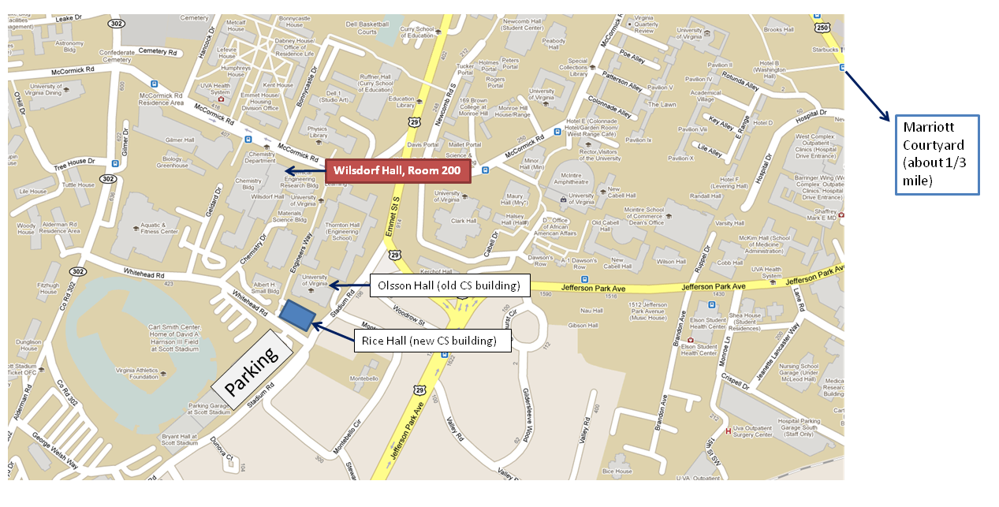

Kickoff Meeting
Location
The meeting will be held in Wilsdorf Hall, Room 200 (the Dean’s Conference room).

{kind=link}
Schedule
Monday, 29 August
7:30pm- Dinner, Maya Restaurant, 633 West Main Street. (This is walkable from the Marriott Courtyard, just down the street.)
Tuesday, 30 August
8:30am-9:00am Simple breakfast (muffins, coffee) will be available in the conference room
9:00am-9:15am Welcome, Introductions (David Evans, University of Virginia)
9:15am-10:15am Cryptographic Protocols for Secure Computation (Jonathan Katz, University of Maryland)
10:15am-10:45am Secure Computation with Malicious Adversaries (Chih-hao Shen, University of Virginia)
10:45am-11am Break
11am-noon Language-Based Security (Michael Hicks, University of Maryland)
noon-1pm Lunch (will be delivered to meeting room)
1-1:30pm Fast Garbled Circuits (Yan Huang, University of Virginia)
1:30-2:00pm Genomics for Non-Biologists (Aaron Mackey, University of Virginia, Public Health Sciences)
2:00-2:30pm Threshold Fully Homomorphic Encryption and Secure Computation (Mona Sergi, University of Virginia)
2:30-3:30pm Discussion (topics including: advisory board, new research directions, auditing information leakage, general audience publication, plans for future meetings)
3:30pm- (Optional) Tour of Rice Hall (new CS building), UVa grounds